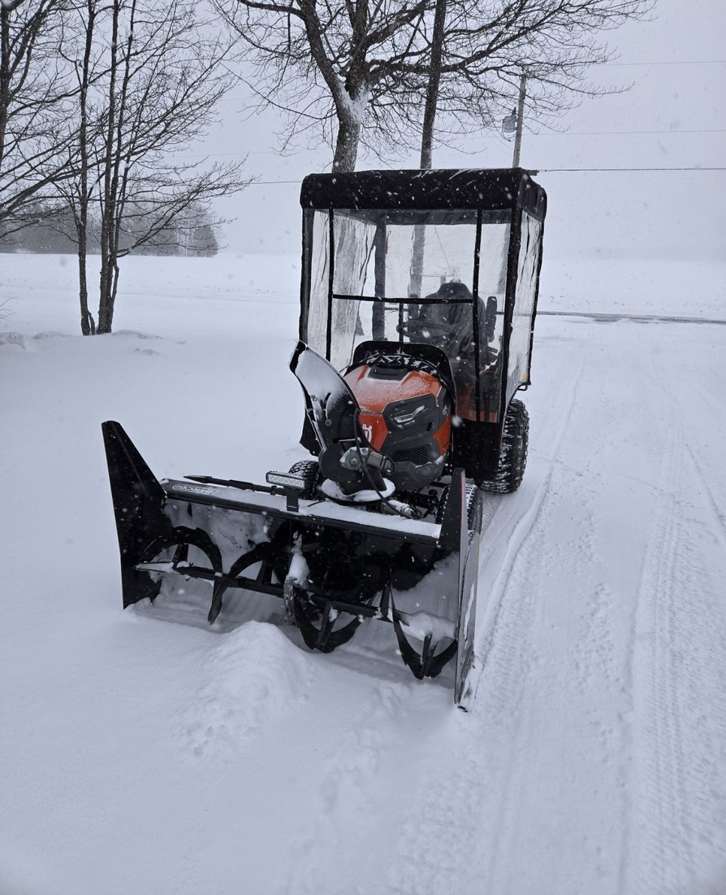

Souffleuse Berco 44 po Nordet (Northeast)
Nº 700474-3 · kit boutique « nosku-6 »
Le kit comprend
- La souffleuse 2 phases de 44 po
- Le sous-châssis conçu pour la famille du tracteur choisi (inclut le relevage ; treuil inclus en version électrique)
- Le mécanisme d'entraînement Nordet (courroie incluse)
Pas de Nº de kit unique : le Nº varie selon la variante de tracteur choisie.
Ça fitte sur
Tracteurs à volant de 16 à 28 HP : Cub Cadet XT1/XT2/XT3 (2015 et +, 5e caractère du Nº de modèle = « A ») et séries 1000/2000 · construits par H.O.P. (dont Ariens) · construits par MTD (dont Toro GT/LX 2010–2014 seulement) · John Deere séries 100/LA/D/E/S/X300/X500. Aucun fit zero-turn ; aucun fit Ducar publié.
Installation — à prévoir
- Inclus Sous-châssis + entraînement Nordet, requis (ex. XT1/XT2 : 700796 + 700797 — tableau ci-dessus)
- Requis — non inclus Contrepoids arrière d'au moins 100 lb (Nº selon le tracteur)
- Requis — non inclus Chaînes à pneus approuvées par le manufacturier (espacement aux 2 mailles, emballage de 2)
- Manuel : ne pas opérer dans une pente de plus de 10° ; retirer les contrepoids quand l'accessoire est enlevé